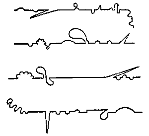
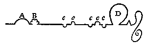

Laurence Sterne: Život a názory blahorodého pana Tristrama Shandyho
Šestá kniha, kapitola XL
Dílo mi jde nyní pěkně od ruky; při zeleninové stravě a špetce studených semínek bezpochyby dokáži v příběhu strýčka Tobyho i svém vlastním pokračovat jakž takž přímou čarou – Nuže,

To byly čtyři čáry, po nichž jsem postupoval v první, druhé, třetí a čtvrté knize. – V páté jsem byl hodný, – sledoval jsem přesně tuto čáru:

Je na ní vidět, že kromě křivky A, to jak jsem zabrousil do Navarry, – a vroubkované křivky B, to jak jsem se tam projížděl s paní Baussiere a jejím panošem, – nedovolil jsem si jedinou nezbednou odbočku, teprve ďábli Jeana de la Casse mě svedli k zajížďce D – ta ccccc jsou pouhé parenteze, všední sklouznutí a úchylky, jakých se dopouštějí i ministři; proti tomu, co tropí jiní – a co jsem já na ABD spáchal, rozplývají se vniveč.
V této poslední knize jsem byl ještě hodnější – od konce Le Feverovy epizody až k počátkům strýčkových tažení, – neuchýlil jsem se snad ani o yard.
Budu-li v tom polepšení stále tak vytrvalý, není vyloučeno – že z dopuštění ďáblů Jeho Milosti biskupa benevetského – dosáhnu takové dokonalosti, že půjdu takhle:
podle pravítka učitele psaní (které jsem si od něho schválně vypůjčil) nakreslil jsem tu čáru rovně, jak to jenom šlo, bez úchylek vpravo i vlevo.
Tato přímá čára, – po které jest se ubírati křesťanům, říkají bohoslovci –
– Symbol mravní řádnosti! říká Cicero –
– Nejlepší čára, říkají pěstitelé kapusty – toť nejkratší čára, říká Archimedes, vedená od daného bodu k druhému. –
Kéž byste si to, urozené paní, vzaly k srdci, až si zas dáte šít šaty k narozeninám!
– To byla ale cesta!
Než napíši kapitolu o rovných čarách – povězte mi – prosím vás –jenom se nezlobte – co je to za nedorozumění – kdo vám to namluvil – jak se stalo, že si vy, lidé důvtipu a ducha, tuto čáru napořád pletete s čarou GRAVITAČNÍ?
Konec šesté knihy
Osmá kniha, kapitola XI
Protože vdova Wadmanová strýčka milovala – a strýček Toby vdovu Wadmanovou nemiloval, nezbývalo vdově Wadmanové než strýčka dále milovat – nebo toho nechat.
Vdova Wadmanová neudělala to ani to. –
– Můj ty bože! – ale zapomínám, že mám něco z její povahy; někdy se stane, bývá to kolem rovnodennosti, že nějaká pozemská bohyně je tuzinko taková nebo onaká, až kvůli ní snídat nemohu – a jí je to nadobro jedno, jestli se nasnídám, nebo ne –
– Zatrolená! hned ji posílám do Tatarska, z Tatarska do Tierra del Fuego a odtamtud k čertu: zkrátka to božstvo nosím a cpu do kdejaké pekelné komůrky.
Ale protože srdce je útlocitné a v tom období se vášně desetkrát za minutu vzdouvají a zas opadávají, hned ji zas odtamtud odnáším, a jak už jsem ve všem všudy přemrštěný, stavím ji rovnou doprostřed mléčné dráhy –
Přejasná hvězdo! vylejž svou moc na jednoho –
– Ďas aby ji vzal i s její mocí – při tom slově mě hned přejde trpělivost – dobře mu tak! – Při všem chundelatém a kundelatém! křiknu, smeknu kožešinovou čapku a točím s ní na prstě – ani troník nedám za tucet takových jako on!
– Ale čapka je to znamenitá (nasadím si ji na hlavu a přetáhnu přes uši) – a teplá – a hebká; zvlášť když se hladí po srsti – ale běda! to se mi nikdy nepoštěstí – (a tady má filosofie už zase ztroskotala).
– Kdepak; do kaše prst strkat nebudu (upouštím od té metafory) –
Střída a kůrka
Dužina a slupka
Hlava a pata – protiví se mi, hnusí, štítím se jí – už při pouhém pohledu je mi z ní nanic –
Je samý pepř,
česnek,
ocet,
sůl a
pendrek – při arcikuchaři všech kuchařů, který snad od rána do večera vysedává u krbu a vymýšlí pro nás ohnivá jídla, ani zanic se jí nedotknu –
– Ach, Tristrame! Tristrame! vykřikla Janička.
Ach, Janičko! Janičko! ozval jsem se já a tak jsem se dostal ke kapitole dvanácté.
Osmá kniha, kapitola XII
– „Ani zanic se jí nedotknu," řekl jsem –
Panebože, jak jsem si tou metaforou rozpálil obraznost!
Osmá kniha, kapitola XIII
Mluvte si o tom, důstojní a vážení pánové, co chcete (co se myšlení týče – ti, kdo skutečně myslí, – myslí si o tom stejně jako o jiných věcech celkem totéž) – je z toho patrno, že aspoň abecedně vzato – LÁSKA rozhodně patří k nejvýš
Absolutním
Blouznivým
Citovým
Dezolátním věcem v životě, – k nejvýš
Exaltovaným
Fanfarónským
Gaťovským
Hadačským
Intrikánským (K tady chybí) a
Lyrickým vášním lidským, a přitom zároveň k vášním nejvýš
Malicherným
Nevrlým
Otravným
Prožluklým
Směšným
Reptavým – R patřilo k mimochodem napřed – má zkrátka takový ráz, že jak jednou otec v závěru dlouhé rozpravy řekl strýčkovi Tobymu – „Stěží dáš, bratře Toby," řekl, „dvě myšlenky o ní dohromady bez nějaké hypallagé" „A co je to? zvolal strýček Toby.
Vůz před koněm, odvětil otec –
„Copak má co dělat kůň za vozem? zvolal strýček Toby – Nic, pravil otec, buď se dá zapřáhnout – nebo toho nechá.
Nuže, jak jsem vám už řekl, vdova Wadmanová neudělala to ani to.
Ale pro každý případ stála okšírovaná a očabrakovaná.
Sterne, Laurence: Život a názory blahorodého pana Tristrama Shandyho, přel. A.Skoumal, Odeon, Praha 1971
|